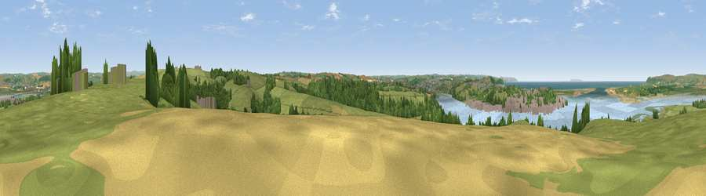

Viewpoint near Instow
#5546 in England · top 15% of its area beats it · near InstowThe view, rendered

A 360° render of this exact spot computed from the terrain model, tree cover and land cover — summer colours, afternoon light, calibrated against photographs of famous viewpoints. Real trees, hedges and buildings will differ in detail.
The panorama
Grey silhouette: terrain skyline in each direction (720 bearings, Earth curvature and refraction included). Dashed green: skyline with trees (+15 m) and buildings (+8 m) as obstacles. Blue strip: how far the ground is visible on each bearing.
Where the view opens
Wedge length = distance to the farthest visible ground on that bearing (vegetation-aware). Rings at 10, 25 and 50 km.
What fills the view
54% grassland · 18% water · 15% woodland · 5% cropland · 5% built-up ·
Angular shares of the visible panorama (visual magnitude), not map area. Landscape diversity 0.57 (0–1 Shannon).
Key numbers
More beautiful places nearby
The staircase of upgrades: each row has a higher view potential than everything closer. Driving times are estimates from straight-line distance, calibrated against real road routing — check an actual route before setting out.
| Place | Direction | Drive | Score |
|---|---|---|---|
| Viewpoint near Yelland | E · 1 km | ~4 min | 72.6 |
| Viewpoint near Westward Ho! | WSW · 4 km | ~10 min | 75.3 |
| Viewpoint near Westward Ho! | WSW · 6 km | ~13 min | 76.2 |
| Viewpoint near Saunton | NNW · 8 km | ~17 min | 76.6 |
| Viewpoint near Croyde | NNW · 9 km | ~17 min | 83.7 |
| Viewpoint near Woolacombe | NNW · 12 km | ~22 min | 84.7 |
| Viewpoint near Combe Martin | NNE · 21 km | ~35 min | 86.9 |
| Viewpoint near Combe Martin | NNE · 21 km | ~35 min | 88.9 |
51.05254, -4.17041 · source: screening · position refined by local search. Computed location — check access rights before visiting.